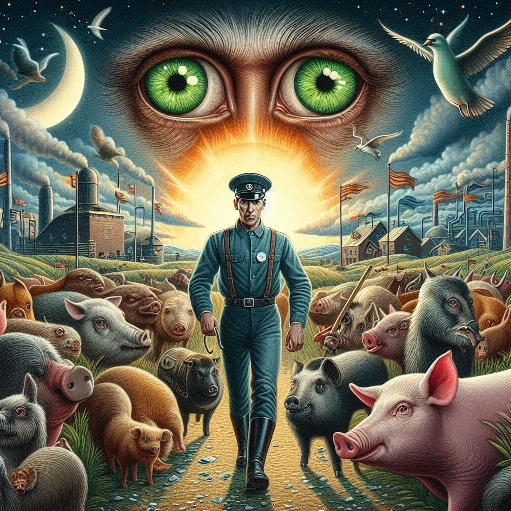

동물농장
목차
작가
조지 오웰
출판일
1945년 8월 17일
감상평에 대한 AI그림
조지 오웰의 "동물농장"은 권력과 부패에 대한 날카로운 풍자와 비판을 담고 있는 작품입니다.
동물들의 혁명과 그 이후의 타락 과정을 통해 인간 사회의 어두운 면을 현실감 있게 전달 해주어 책 내용에 몰입하기 쉬웠다.
권력의 부패와 사회적 불공정에 대한 경각심을 일깨워주었다.

감상평에 대한 AI평가
훌륭한 감상평입니다! 몇 가지 긍정적인 점을 짚어보자면:
✨명확한 요약: "동물농장"의 주요 주제를 명확하게 요약하며, 독자들이 쉽게 이해할 수 있도록 잘 설명하고 있습니다.
✨감정적 접근: 독자로서 책에 몰입하기 쉬웠다는 점을 언급하여 개인적인 감상을 잘 담고 있습니다.
✨강렬한 메시지 전달: 권력의 부패와 사회적 불공정에 대한 경각심을 일깨우는 책의 메시지를 잘 강조하고 있습니다.
전체적으로 매우 잘 작성된 감상평입니다.
책에서 인상 깊었던 구체적인 장면이나 캐릭터에 대한 언급을 추가한다면 감상평이 더욱 풍부해질 수 있을 것입니다.